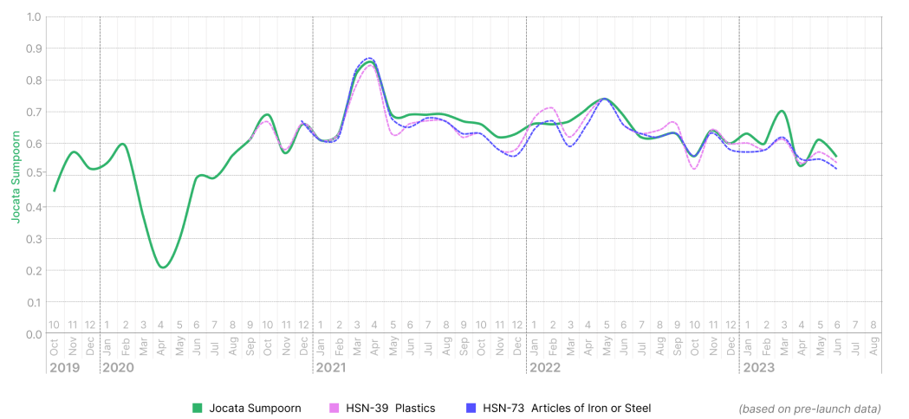

Jocata Sumpoorn - Sectoral Indices
The sectoral indices will offer insights into how different sectors, as classified under GST by the Harmonized System of Nomenclature (HSN), are performing as compared to the overall MSME sector.

Fig.- Jocata Sumpoorn – Sectoral Indices
Note: A GSTIN is classified as belonging to an industry, if the Trailing Twelve Month (TTM) sales of a particular HSN (at a 2 - digit level) in a month is greater than 50% of the sum of TTM sales of all HSNs by that GSTIN for the same month.
Jocata Sumpoorn
Activity
Indices
Manufacturing, Trading and Service indices based on the core business activity of the MSMEs.
Jocata Sumpoorn
Geographic
Cluster Indices
Region and industrial cluster-based indices based on location and industrial activity of the MSMEs.
Be the first to know these updates
Subscribe